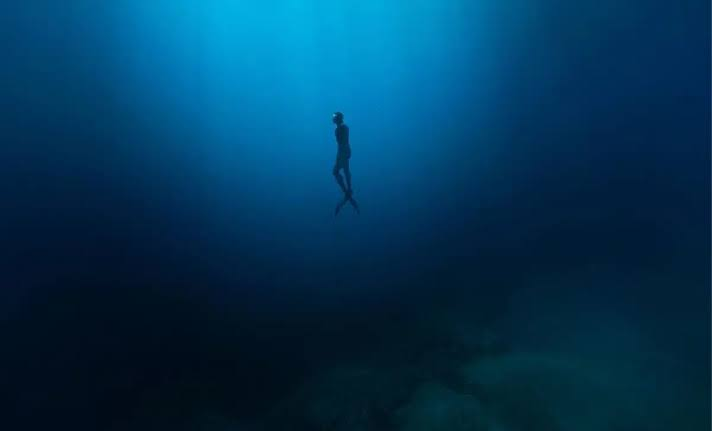

Have you ever wonder why NASA stop exploring the ocean? becuase NASA said that the've seen some creature that are we don't really need to know that are existing. But what did NASA see? why did they say that we don't need to know about the creatures that they see?

NASA never actually stopped exploring the ocean, contrary to popular internet rumors. While agencies like NOAA handle physical deep-sea floor mapping, NASA continuously monitors the oceans via Earth science satellites to measure global sea levels, salinity, and surface temperatures.

NASA doesn't just study space; the agency explores Earth's deep ocean to prepare for extraterrestrial missions. By analyzing extreme, pitch-black underwater environments with drones like the ORPHEUS Submersible and conducting training at the Aquarius Reef Base, NASA has made fascinating discoveries.
Another fact is astronomers found massive amounts of water in space. A giant cosmic cloud of water vapor contains 140 trillion times more water than all of Earth's oceans combined. This huge reservoir orbits a supermassive black hole 12 billion light-years away.